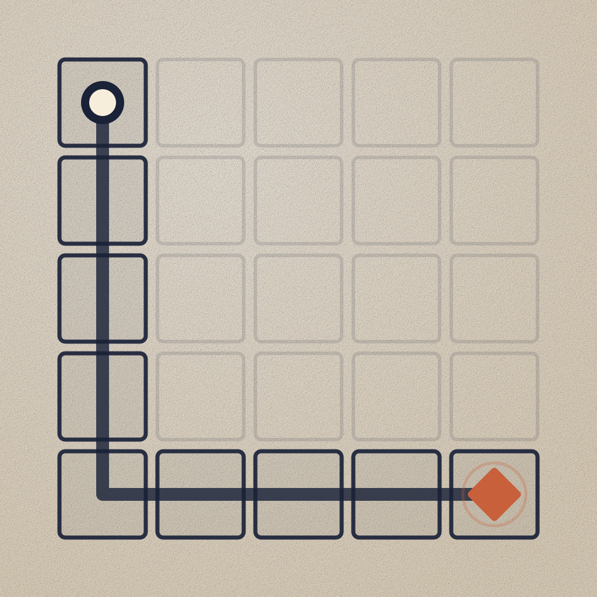
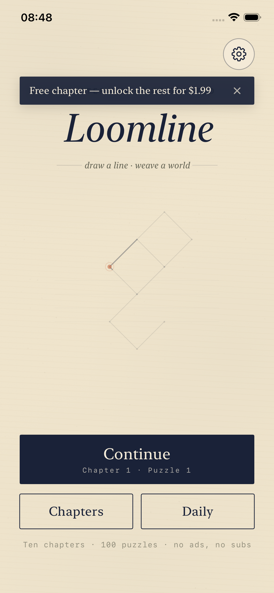
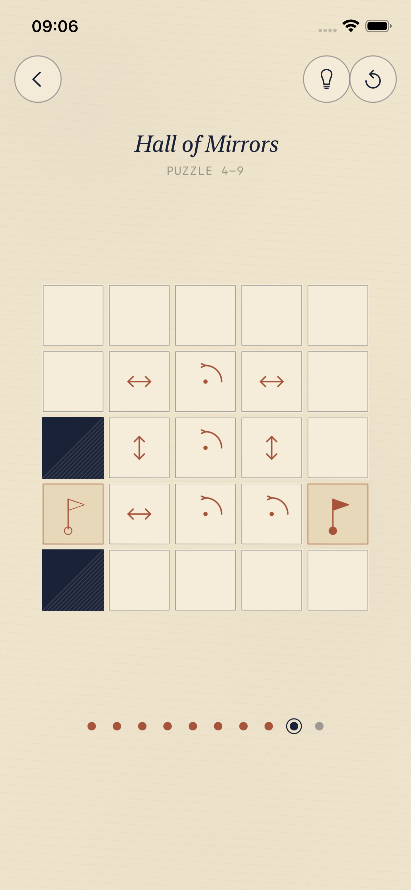
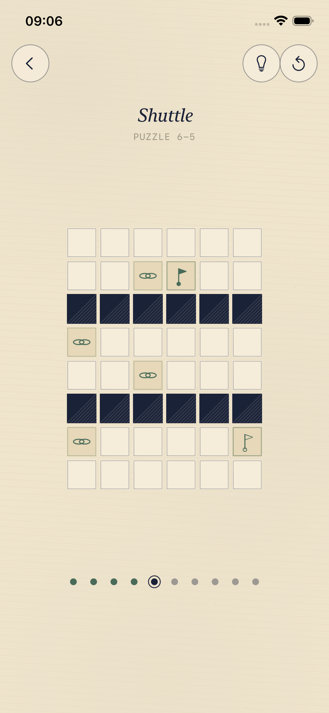
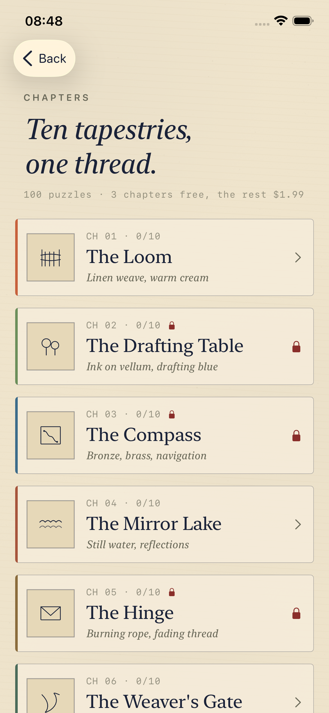
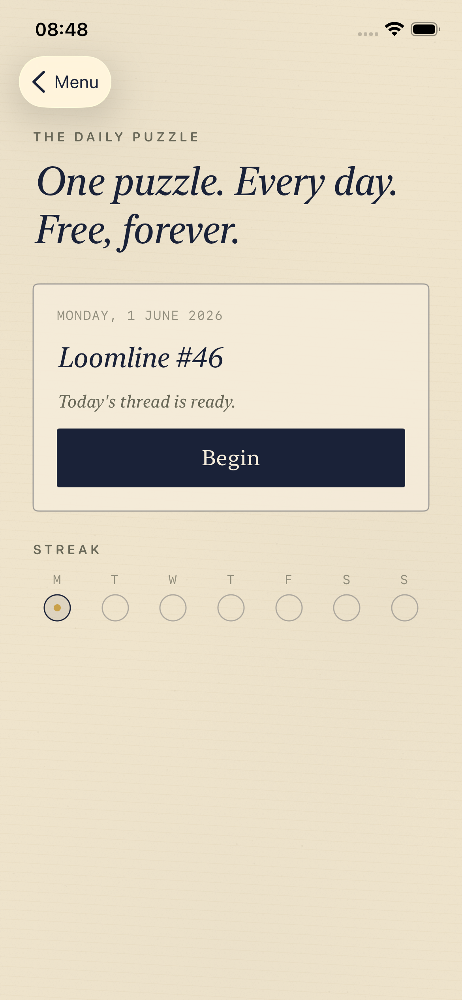
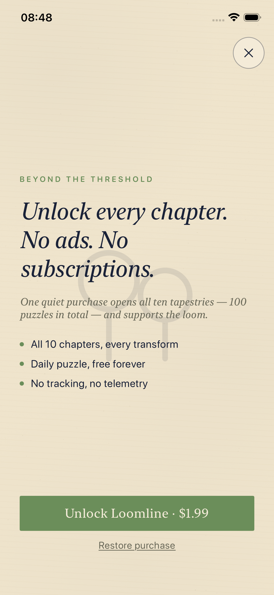

Loomline
One line. A world that moves.
Coming 2026 · App StoreFact Sheet
- Developer
- Mariusz Piątkowski — solo developer
- Release
- 2026 (exact date TBA)
- Platforms
- iPhone & iPad (Universal)
- Price
- Free to download · one-time $1.99 unlock for the full game
- Content
- 10 chapters · 100 puzzles · free Daily Puzzle
- Session length
- 1–5 minutes per puzzle
- Input
- One finger. A single continuous swipe is the only control.
- Contact
- loomline.game@gmail.com
Description
Loomline is a meditative line-drawing puzzle game. Draw a single unbroken line across a grid to fill every tile — but the grid doesn't sit still. Special tiles, when your line passes through them, transform the board itself: pivoting it, mirroring it, dropping blocks under gravity, crumbling the floor behind you, linking distant threads. The transformations are the puzzle.
There are no timers, no scores, no ads, no accounts. Just a quiet board of warm paper and ink, a thread to draw, and the small satisfying click of a world rearranging itself around your line. One relaxing puzzle before bed.
Three of the ten chapters — and the Daily Puzzle — are free forever. A single $1.99 purchase unlocks the rest. No subscriptions, ever.
Features
- One input. Draw a single continuous line — that's the whole game.
- The grid is alive. Pivots, mirrors, gravity, crumbling tiles, linked threads, bridges, color locks, and one-way paths — each chapter introduces one idea and teaches it wordlessly.
- 100 puzzles across 10 chapters, each chapter with its own palette and motif — from linen weave to stained glass to midnight stars.
- Free Daily Puzzle with streaks and a Wordle-style text share — free forever, no purchase needed.
- Fair monetisation. Free chapters, one $1.99 unlock, no ads, no subscriptions, no accounts.
- Paper-and-ink aesthetic. Warm cream, ink navy, per-chapter accent colors. Calm by design.
- Color-blind friendly. A dedicated color-blind mode patterns every color tile.
- Share cards. Every solve can be shared as a paper-textured card of your finished line.
The Chapters
| # | Chapter | Theme | Access |
|---|---|---|---|
| 1 | The Loom | Linen weave, warm cream | Free |
| 2 | The Drafting Table | Ink on vellum, drafting blue | Paid |
| 3 | The Compass | Bronze, brass, navigation | Paid |
| 4 | The Mirror Lake | Still water, reflections | Free |
| 5 | The Hinge | Burning rope, fading thread | Paid |
| 6 | The Weaver's Gate | Tapestry, knots | Free |
| 7 | The Overpass | Stone arches, viaducts | Paid |
| 8 | The Prism | Stained glass, gradients | Paid |
| 9 | The Current | Rivers, flow arrows | Paid |
| 10 | The Finale | Midnight blue, stars | Paid |
Screenshots






All screenshots are 1170 × 2532 (iPhone 6.1″). Right-click / long-press any image to save the full-resolution original.
Logo & Icon
App icon, 1024 × 1024 PNG — download.
{kind=link}
About the Developer
Loomline is made by Mariusz Piątkowski, a solo developer. It is a one-person project end to end: design, code, puzzles, and the paper world they live in.
Press Contact
Review builds, additional assets, and questions: loomline.game@gmail.com